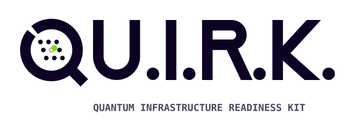
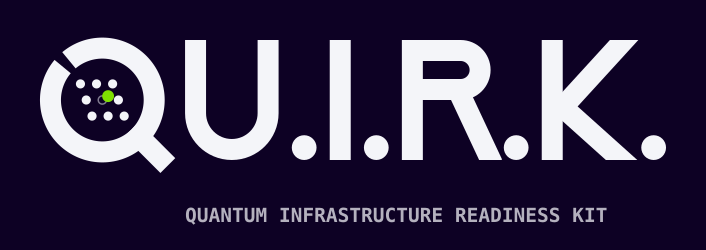
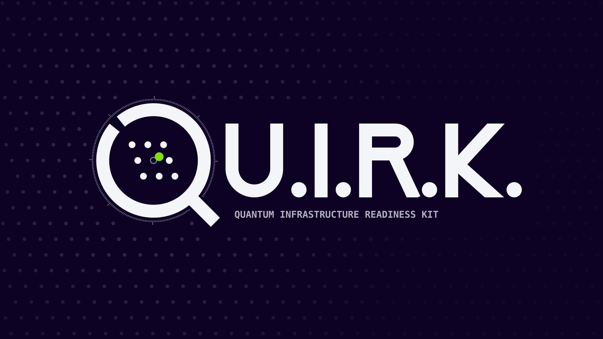
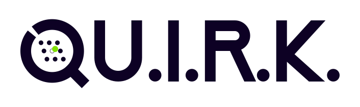
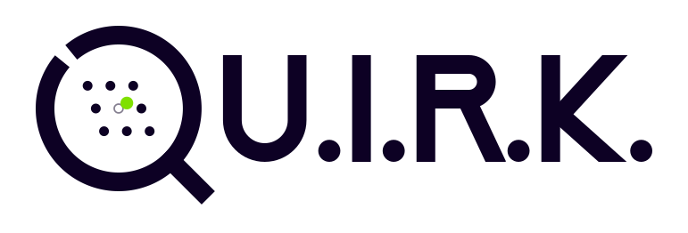

A Q drawn as a scanner lens over a lattice. Up close, every part of it is a reference to the post-quantum algorithms QU.I.R.K. looks for. The name is the thesis: lattice cryptography is secure because of a small, deliberate error. That error is the quirk.
Whenever the name is spelled out, the mark stands in for the Q. The same lens scales from a 16 px favicon up to a stage backdrop. The larger it gets, the more of its detail shows.



Two of the three colours are the prime moduli from the NIST standards, written as hex. Use Signal only for the error point. It is the one accent in the system.
The lattice drops out below about 48 px. Small sizes keep only the ring, the tail and the error point. The mono version is single-colour and the error point stays visibly offset, so it works for embossing, laser etching or a two-material 3D print.
| Concept | Standard | In the mark | Where |
|---|---|---|---|
| Module-LWE key encapsulation | FIPS 203 ML-KEM | encoded | 3×3 lattice, error point, Ink colour, ring |
| Module-lattice signatures | FIPS 204 ML-DSA | encoded | Signal colour, ring (same X²⁵⁶+1) |
| Hybrid key exchange | X25519MLKEM768 | encoded | Two ring halves joined by the tail |
| Hash-based signatures | FIPS 205 SLH-DSA | not encoded | Possible later: a Merkle fork in the K of the wordmark |
| NTRU-lattice signatures | FN-DSA (draft FIPS 206) | not encoded | Shares the ring idea, with no unique element |
| Code-based KEM | HQC (selected 2025) | not encoded | — |
Keep one ring stroke width (10 units on the 120 grid) clear on every side, measured from the tail tip and the outer ring edge.
Primary logo 24 px tall. The mark with its lattice needs 48 px; below that, use the favicon construction.
Signal appears once: on the error point. Don't recolour the ring halves, the lattice or the wordmark with it.
Regenerate from docs/brand/build_logo.py. The easter eggs only hold if the geometry stays exact.